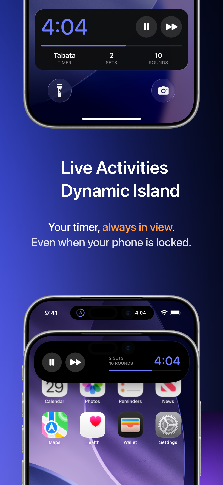
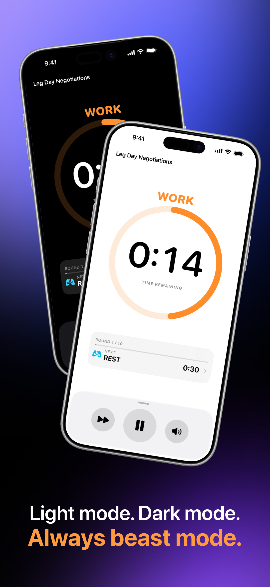

Build every phase
Set warm-up, work, recovery, set breaks, cool-down, rounds, and sets. Start from a template or make the session entirely yours.
Build the workout you actually train with, put your phone down, and let clear audio cues keep every round moving.
 Built by an athlete
Built by an athlete
Everything you need
Quick enough for a four-minute Tabata. Flexible enough for multi-set circuits, boxing rounds, sprints, and your own training structure.
Set warm-up, work, recovery, set breaks, cool-down, rounds, and sets. Start from a template or make the session entirely yours.
Whistles, gongs, and spoken cues keep you on pace while the screen is locked and your music continues to play.
Live Activities on iOS Lock Screen and Dynamic Island keep your workout session accessible at all times.
Save your timers once, inspect the full sequence, then launch any routine straight from your library.
Review sessions by day, week, or month and follow your trained time, completed rounds, and workout streaks.
Your timers, preferences, and workout history stay on your device. Zero account requirement, zero ads, and zero fluff.
Inside FourEver
Strong phase colours, at-a-glance progress, and focused controls make the timer easy to read without pulling you out of the session.





More Apps & Utilities
Tools built with the same focus on performance, utility, and user control.
Independent scroll direction and mouse acceleration control for macOS. Switch instantly between standard pointer acceleration for work and raw 1:1 linear tracking for gaming, while reversing physical mouse wheel scrolling without affecting Trackpad gestures.